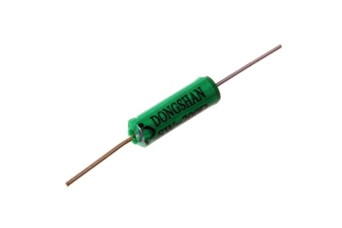

11 mm Tilt Switch - TS11

Summary
Name: 11 mm Tilt Switch
ID: TILS-11-X-STAN-01
Hex ID: TS11
WebPage: https://github.com/oomlout/oomlout-OOMP/wiki/TILS-11-X-STAN-01
Short URL: http://oom.lt/TS11
Revision History: https://github.com/oomlout/oomlout-OOMP/blob/master/parts/TILS-11-X-STAN-01/
| Type |
Size |
Color |
Description |
Index |
TILS
Tilt Switch |
11
11 mm |
X
|
STAN
|
01
|
Images
About
This part is awaiting a description.
Specifications
| Info |
Value |
| Type |
Tilt Switch |
| Size |
11 mm |
| Diameter |
3.4 mm |
| Length |
11 mm |
| Number of Pins |
2 |
Extra Details
Spotted a mistake, want to add more? Let us know oomp@oomlout.com
All images and resources are licensed [CC BY-SA] unless otherwise stated (ie. the datasheets)